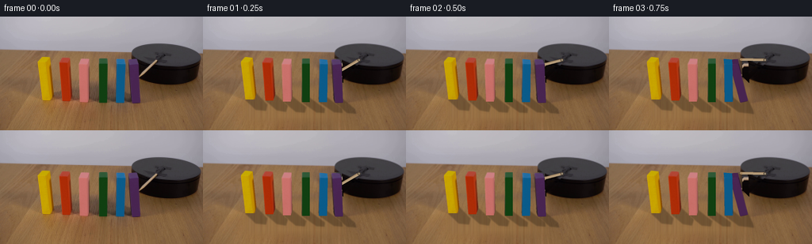
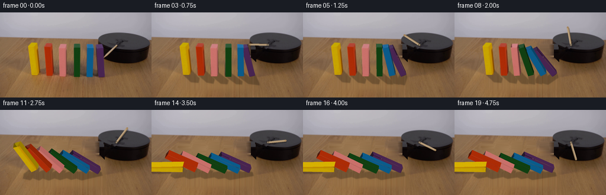
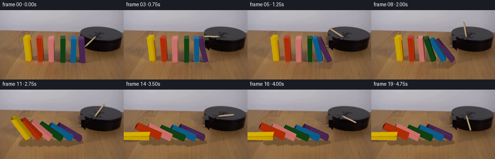
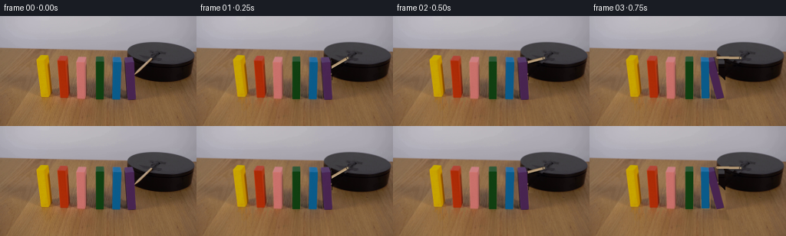

CODING AGENTS AS PIXEL WORLD MODELS
traex/GPT-6.1-Sol · 0035
点击播放 · 原生 RGB 像素
逐轮保存的候选
回放视频、检查图与代码变化。
每份候选均可单独播放。实际图片检查记录在下方工具轨迹中。
候选 01播放与检查图
点击播放 · 原生 RGB 像素

展开代码变化
--- 上一保存版本
+++ 本次保存版本
@@ -0,0 +1,221 @@
+from pathlib import Path
+import math
+import numpy as np
+from PIL import Image, ImageDraw, ImageFilter
+from scipy.ndimage import gaussian_filter, map_coordinates, binary_dilation
+from scipy.spatial import ConvexHull
+import artifact_io
+from dynamics import simulate
+
+ROOT=Path(__file__).resolve().parent
+W,H,S=256,144,3
+FIRST=np.array(Image.open(ROOT/'first_frame.png').convert('RGB'))
+# The six standing wooden pieces, from left to right. Each quadrilateral is
+# calibrated in image coordinates; the original face grain is retained.
+DATA=[
+ (59.5,11,[(53.1,105.3),(65.5,104.8),(60.7,60.1),(47.8,58.6)],(1.8,-8.1)),
+ (83,11,[(78.6,106.2),(88.7,106.1),(85.9,60.5),(74.4,58.6)],(2.5,-7.9)),
+ (106,11,[(100.7,107.6),(110.7,107.6),(109.8,60.1),(98.6,59.1)],(1.8,-6.9)),
+ (129.5,10,[(124.5,108.1),(134.5,108.1),(134.5,59.0),(124.5,58.5)],(.15,-5.7)),
+ (151.5,11,[(146,108),(156.6,108),(157.1,60.7),(146.6,59.6)],(-.3,-6.0)),
+ (171.5,11,[(166.1,109),(176.5,109),(174.7,60.7),(163.1,59.6)],(-1.6,-6.0)),
+]
+
+def mask_polygon(points,scale=1):
+ im=Image.new('L',(W*scale,H*scale));ImageDraw.Draw(im).polygon([tuple(np.asarray(p)*scale) for p in points],fill=255)
+ return np.array(im,dtype=float)/255
+
+class Block:
+ def __init__(self,index,data):
+ self.index=index;self.x,self.w,front,d=data; self.h=55.
+ self.front=np.array(front,float);self.depth=np.array(d,float)
+ self.points=np.r_[self.front,self.front+self.depth]
+ self.local=np.array([[-self.w/2,-27.5],[self.w/2,-27.5],[self.w/2,27.5],[-self.w/2,27.5]]*2)
+ self.base=self.front[:2].mean(0)
+ self.sx=(self.front[2:].mean(0)[0]-self.base[0])/self.h
+ self.sy=(self.front[2:].mean(0)[1]-self.base[1])/self.h
+ # Pick the paint from the middle of the original front, free of edges.
+ xx=int(np.mean(self.front[:,0])); yy=int(np.mean(self.front[:,1]))
+ self.paint=np.median(FIRST[yy-7:yy+7,xx-2:xx+3],axis=(0,1)).astype(float)
+ hull=self.points[ConvexHull(self.points).vertices]
+ self.mask=mask_polygon(hull)
+ def project(self,state):
+ x,z,a=state;c,s=np.cos(a),np.sin(a)
+ new=self.local@np.array([[c,s],[-s,c]])+np.array([x,z])
+ old=self.local+np.array([self.x,27.5])
+ dx,dz=(new-old).T
+ return self.points+np.c_[dx+self.sx*dz,self.sy*dz]
+
+BLOCKS=[Block(i,d) for i,d in enumerate(DATA)]
+
+
+def make_background():
+ src=FIRST.astype(float)
+ remove=np.zeros((H,W),bool)
+ for b in BLOCKS:remove|=b.mask>.05
+ remove=binary_dilation(remove,iterations=1)
+ # Fill the narrow silhouettes using the wood on either side at equal depth.
+ dst=src.copy()
+ for y in range(48,112):
+ good=np.flatnonzero(~remove[y]);bad=np.flatnonzero(remove[y])
+ for c in range(3):dst[y,bad,c]=np.interp(bad,good,src[y,good,c])
+ # Broad original cast shadows are lifted using a robust table-color fit.
+ yy,xx=np.mgrid[:H,:W];xn=(xx-128)/128;yn=(yy-90)/60
+ terms=np.stack([np.ones_like(xn),xn,yn,xn*xn,xn*yn,yn*yn,xn**3,xn*xn*yn,xn*yn*yn,yn**3],-1)
+ good=(yy>48)&~remove&~((xx>47)&(xx<183)&(yy>78)&(yy<139))&~((xx>161)&(yy<103))
+ good&=(xx<252)
+ co=np.linalg.lstsq(terms[good],src[good],rcond=None)[0]
+ smooth=terms@co
+ for _ in range(3):
+ errors=np.linalg.norm(src-smooth,axis=2);g=good&(errors<14)
+ co=np.linalg.lstsq(terms[g],src[g],rcond=None)[0];smooth=terms@co
+ # Re-use fine wood grain from an unobstructed strip of the same table.
+ grain=src-gaussian_filter(src,(1.2,3.,0))
+ tex=grain[(yy+35).clip(113,143),xx]
+ clean=smooth+tex*.75
+ envelope=np.clip((yy-76)/15,0,1)*np.clip((141-yy)/15,0,1)*np.clip((xx-45)/12,0,1)*np.clip((184-xx)/10,0,1)
+ envelope=gaussian_filter(envelope,1.3)
+ dst=dst*(1-envelope[...,None])+clean*envelope[...,None]
+ # Remove only the moving wooden arm, never the black mounting platform.
+ stick=mask_polygon([(194.6,53.5),(199.1,55.3),(176.4,78.1),(172.5,75.3)])
+ remove_stick=binary_dilation(stick>.01,iterations=1)
+ # Restore the platform using nearby pixels along the same top/side surface.
+ for y,x in zip(*np.where(remove_stick)):
+ candidates=[]
+ for offset in [-8,-7,-6,6,7,8]:
+ q=x+offset
+ if 166<q<252 and not remove_stick[y,q] and not remove[y,q]:candidates.append(src[y,q])
+ if candidates:dst[y,x]=np.median(candidates,axis=0)
+ # Paint beneath the last block changes from platform side to wood at its base.
+ for y in range(52,88):
+ for x in range(161,179):
+ if remove[y,x] and x>167:
+ # Side boundary is the original rounded left edge, behind the block.
+ edge=166+(y-52)*.02 if y<77 else 169+(y-77)*1.1
+ if x>edge:
+ if y<56:dst[y,x]=src[y,min(184,x+21)]
+ elif y<79:dst[y,x]=src[y,min(191,x+21)]
+ else:dst[y,x]=src[y,min(198,x+25)]
+ return np.clip(dst,0,255)
+
+BG=make_background()
+YGRID,XGRID=np.mgrid[:H*S,:W*S]/S
+FIRST_HI=np.array(Image.fromarray(FIRST).resize((W*S,H*S),Image.Resampling.BICUBIC)).astype(float)
+BGHI=np.array(Image.fromarray(BG.astype('uint8')).resize((W*S,H*S),Image.Resampling.BICUBIC)).astype(float)
+
+
+def poly_area(p):
+ return np.sum(p[:,0]*np.roll(p[:,1],-1)-p[:,1]*np.roll(p[:,0],-1))/2
+
+def homography(src,dst):
+ mat=[];rhs=[]
+ for (x,y),(u,v) in zip(src,dst):
+ mat.extend([[x,y,1,0,0,0,-u*x,-u*y],[0,0,0,x,y,1,-v*x,-v*y]]);rhs.extend([u,v])
+ try:return np.r_[np.linalg.solve(mat,rhs),1].reshape(3,3)
+ except np.linalg.LinAlgError:return None
+
+def draw_face(canvas,points,source=None,color=None,factor=1):
+ points=np.array(points,float)
+ if abs(poly_area(points))<.02:return
+ x0=max(0,int(points[:,0].min()*S)-2);x1=min(W*S,int(points[:,0].max()*S)+3)
+ y0=max(0,int(points[:,1].min()*S)-2);y1=min(H*S,int(points[:,1].max()*S)+3)
+ if x0>=x1 or y0>=y1:return
+ p=points*S-[x0,y0]
+ mask=Image.new('L',(x1-x0,y1-y0));ImageDraw.Draw(mask).polygon([tuple(q) for q in p],fill=255)
+ alpha=np.array(mask,float)/255
+ ys=YGRID[y0:y1,x0:x1]+.5/S;xs=XGRID[y0:y1,x0:x1]+.5/S
+ if source is not None:
+ h=homography(points,np.array(source))
+ if h is None:return
+ den=h[2,0]*xs+h[2,1]*ys+1
+ u=(h[0,0]*xs+h[0,1]*ys+h[0,2])/den;v=(h[1,0]*xs+h[1,1]*ys+h[1,2])/den
+ texture=np.stack([map_coordinates(FIRST[:,:,c].astype(float),[v,u],order=1,mode='nearest') for c in range(3)],-1)*factor
+ else:
+ # Quiet photographic paint grain instead of a perfectly flat CGI fill.
+ q=(np.sin(xs*1.9+ys*.53)+np.sin(xs*.2+ys*3.3))*.55
+ texture=np.asarray(color)*factor+q[...,None]
+ sub=canvas[y0:y1,x0:x1]
+ sub[:]=sub*(1-alpha[...,None])+texture*alpha[...,None]
+
+
+def shadows(canvas,states):
+ sh=np.zeros((H*S,W*S),float)
+ for b,state in zip(BLOCKS,states):
+ pts=b.project(state);a=state[2]
+ # Projection of each corner onto the table along the constant illumination.
+ loc=b.local@np.array([[np.cos(a),np.sin(a)],[-np.sin(a),np.cos(a)]])+state[:2]
+ z=np.maximum(loc[:,1],0)
+ shadow=pts+np.c_[.34*z,(-b.sy+.25)*z]
+ hp=shadow[ConvexHull(shadow).vertices]
+ arr=mask_polygon(hp,S)
+ sh=np.maximum(sh,gaussian_filter(arr,2.2)*.25)
+ # Fine contact bands keep the fallen pieces grounded.
+ canvas*=1-sh[...,None]
+
+
+def draw_arm(canvas,t):
+ # Clockwise sweep in the plane of the rotary wooden striker.
+ angle=math.radians(134+63*t)
+ pivot=np.array([196.7,55.0]);end=pivot+np.array([30*np.cos(angle),30*np.sin(angle)])
+ n=np.array([-np.sin(angle),np.cos(angle)])*1.65
+ # Its narrow shadow on the platform follows the arm rather than staying behind.
+ polygon=np.array([pivot+n,end+n,end-n,pivot-n])
+ shadow=mask_polygon(polygon+np.array([1.2,1.8]),S)
+ canvas*=1-gaussian_filter(shadow,1.1)[...,None]*.24
+ draw_face(canvas,polygon,color=[176,150,116])
+ draw_face(canvas,[pivot+n*.5,end+n*.5,end+n,end*1+n*1.0],color=[198,172,140]) if False else None
+ # Longitudinal highlight and the darker lower bevel, with rounded end.
+ hi=Image.new('RGBA',(W*S,H*S));d=ImageDraw.Draw(hi)
+ def line(p,q,fill,width):d.line([tuple(p*S),tuple(q*S)],fill=fill,width=width)
+ line(pivot-n*.4,end-n*.4,(203,177,144,170),2)
+ line(pivot+n*.83,end+n*.83,(111,83,51,210),2)
+ d.ellipse(tuple(np.r_[end-1.5,end+1.5]*S),fill=(165,133,94,255))
+ d.ellipse(tuple(np.r_[pivot-1.9,pivot+1.9]*S),fill=(92,77,61,255))
+ d.ellipse(tuple(np.r_[pivot-.7,pivot+.7]*S),fill=(171,159,135,255))
+ rgba=np.array(hi,float);al=rgba[:,:,3:]/255;canvas[:]=canvas*(1-al)+rgba[:,:,:3]*al
+
+
+def frame(t,states):
+ canvas=BGHI.copy()
+ shadows(canvas,states)
+ draw_arm(canvas,t)
+ for b,state in reversed(list(zip(BLOCKS,states))):
+ a=state[2];pts=b.project(state)
+ if abs(a)<.001 and abs(state[0]-b.x)<.03:
+ # A standing piece must remain precisely photographic before its collision.
+ alpha=mask_polygon(b.points[ConvexHull(b.points).vertices],S)[...,None]
+ canvas=canvas*(1-alpha)+FIRST_HI*alpha
+ continue
+ # Draw the three outward-facing planes of the cuboid, far planes first.
+ faces=[([3,2,6,7],'top'),([0,4,7,3],'left'),([1,5,6,2],'right'),([0,1,2,3],'front')]
+ for ids,kind in faces:
+ q=pts[ids]
+ if poly_area(q)>=-.02:continue
+ if kind=='front':draw_face(canvas,q,source=b.front)
+ elif kind=='top':
+ f=max(.43,1.03*np.cos(a)-.2*np.sin(a))
+ draw_face(canvas,q,color=b.paint,factor=f)
+ else:
+ f=.48+.60*max(0,np.sin(a)) if kind=='right' else .64-.15*np.sin(a)
+ draw_face(canvas,q,color=b.paint,factor=f)
+ # Very fine beveled leading edges retain the look of painted wood.
+ canvas=np.clip(canvas,0,255).astype('uint8')
+ return np.array(Image.fromarray(canvas).resize((W,H),Image.Resampling.LANCZOS))
+
+
+def main():
+ states=simulate()
+ # Numerical resting-contact slop should not make untouched blocks quiver.
+ for i in range(len(states)):
+ for j,b in enumerate(BLOCKS):
+ if abs(states[i,j,2])<.001 and abs(states[i,j,0]-b.x)<.03:states[i,j]=[b.x,27.5,0]
+ frames=[FIRST.copy()]
+ for i in range(1,20):frames.append(frame(i/4,states[i]))
+ frames=np.asarray(frames,dtype=np.uint8)
+ (ROOT/'.tmp').mkdir(exist_ok=True)
+ Image.fromarray(np.clip(BG,0,255).astype('uint8')).save(ROOT/'.tmp/background.png')
+ np.save(ROOT/'.tmp/states.npy',states)
+ artifact_io.save(frames,ROOT)
+ print('Saved',frames.shape,frames.dtype,'first frame identical:',np.array_equal(frames[0],FIRST))
+
+if __name__=='__main__':main()
候选 02播放与检查图
点击播放 · 原生 RGB 像素

展开代码变化
--- 上一保存版本
+++ 本次保存版本
@@ -94,8 +94,8 @@
edge=166+(y-52)*.02 if y<77 else 169+(y-77)*1.1
if x>edge:
if y<56:dst[y,x]=src[y,min(184,x+21)]
- elif y<79:dst[y,x]=src[y,min(191,x+21)]
- else:dst[y,x]=src[y,min(198,x+25)]
+ elif y<79:dst[y,x]=src[y,212]
+ else:dst[y,x]=src[y,214]
return np.clip(dst,0,255)
BG=make_background()
@@ -163,7 +163,6 @@
shadow=mask_polygon(polygon+np.array([1.2,1.8]),S)
canvas*=1-gaussian_filter(shadow,1.1)[...,None]*.24
draw_face(canvas,polygon,color=[176,150,116])
- draw_face(canvas,[pivot+n*.5,end+n*.5,end+n,end*1+n*1.0],color=[198,172,140]) if False else None
# Longitudinal highlight and the darker lower bevel, with rounded end.
hi=Image.new('RGBA',(W*S,H*S));d=ImageDraw.Draw(hi)
def line(p,q,fill,width):d.line([tuple(p*S),tuple(q*S)],fill=fill,width=width)
@@ -182,8 +181,11 @@
for b,state in reversed(list(zip(BLOCKS,states))):
a=state[2];pts=b.project(state)
if abs(a)<.001 and abs(state[0]-b.x)<.03:
- # A standing piece must remain precisely photographic before its collision.
- alpha=mask_polygon(b.points[ConvexHull(b.points).vertices],S)[...,None]
+ # Full original silhouette, including the narrow painted side and edge blur.
+ hull=b.points[ConvexHull(b.points).vertices]
+ original_mask=mask_polygon(hull,S)
+ original_mask=binary_dilation(original_mask>.01,iterations=2).astype(float)
+ alpha=gaussian_filter(original_mask,.5)[...,None]
canvas=canvas*(1-alpha)+FIRST_HI*alpha
continue
# Draw the three outward-facing planes of the cuboid, far planes first.
@@ -194,7 +196,7 @@
if kind=='front':draw_face(canvas,q,source=b.front)
elif kind=='top':
f=max(.43,1.03*np.cos(a)-.2*np.sin(a))
- draw_face(canvas,q,color=b.paint,factor=f)
+ draw_face(canvas,q,source=b.points[ids],factor=f)
else:
f=.48+.60*max(0,np.sin(a)) if kind=='right' else .64-.15*np.sin(a)
draw_face(canvas,q,color=b.paint,factor=f)
候选 03播放与检查图
点击播放 · 原生 RGB 像素


展开代码变化
--- 上一保存版本 +++ 本次保存版本 @@ -139,6 +139,22 @@ def shadows(canvas,states): + # Keep the actual initial cast shadows until the corresponding piece tips. + # The removed shadow field is photographic, not a newly invented texture. + weights=[];ratios=[] + for b,state in zip(BLOCKS,states): + weights.append(np.exp(-((XGRID-(b.x+9))/15)**2)) + ratios.append(max(0,1-np.sin(min(np.pi/2,abs(state[2]))))**3) + weights=np.array(weights) + retain=np.sum(weights*np.array(ratios)[:,None,None],axis=0)/(weights.sum(axis=0)+1e-8) + table=(YGRID>76)&(XGRID>44)&(XGRID<184)&~((XGRID>165)&(YGRID<88)) + original_objects=np.zeros((H*S,W*S),bool) + for b in BLOCKS: + original_objects|=binary_dilation(mask_polygon(b.points[ConvexHull(b.points).vertices],S)>.01,iterations=3) + table&=~original_objects + residual=FIRST_HI-BGHI + dark=(residual.mean(2)<-.8)&table + canvas+=residual*retain[...,None]*dark[...,None] sh=np.zeros((H*S,W*S),float) for b,state in zip(BLOCKS,states): pts=b.project(state);a=state[2] @@ -150,7 +166,7 @@ arr=mask_polygon(hp,S) sh=np.maximum(sh,gaussian_filter(arr,2.2)*.25) # Fine contact bands keep the fallen pieces grounded. - canvas*=1-sh[...,None] + canvas*=1-(sh*(1-retain))[...,None] def draw_arm(canvas,t):
可观测工具轨迹
实际执行的命令与返回图片。
命令 1exit 0
/bin/bash -lc 'ls -la && cat prompt.txt && cat GENERATION_RULES.md'
命令 2exit 0
/bin/bash -lc "cat artifact_io.py && python - <<'PY'
from PIL import Image
import numpy as np
im=np.array(Image.open('first_frame.png'))
print(im.shape)
# dominant palette labels by RGB, coarse numeric rendering
for y in range(0,144,3):
s=''
for x in range(0,256,3):
r,g,b=im[y:y+3,x:x+3].mean((0,1))
if max(r,g,b)<35: c='#'
elif max(r,g,b)<65: c='@'
elif max(r,g,b)<100: c='o'
elif r>g*1.35 and r>b*1.4:c='R'
elif g>r*1.1 and g>b*1.2:c='G'
elif b>r*1.25 and b>g*1.1:c='B'
elif r>135 and g>125 and b<g*.72:c='Y'
elif max(r,g,b)-min(r,g,b)<18:c='.' if r>175 else ':'
else:c='-' if r>160 else '+'
s+=c
print(f'{y:3}',s)
PY"命令 3exit 0
/bin/bash -lc "python - <<'PY'
import numpy as np
from PIL import Image
from scipy.cluster.vq import kmeans2
im=np.array(Image.open('first_frame.png'))
np.random.seed(42)
cent,l=kmeans2(im.reshape(-1,3).astype(float),24,minit='points',iter=30)
order=np.argsort(cent.mean(1)); cents=cent[order]; labels=np.argsort(order)[l].reshape(144,256)
chars='0123456789ABCDEFGHIJKLMN'
for i,c in enumerate(cents):print(chars[i],np.round(c).astype(int))
for y in range(33,110,2):print(f'{y:3}', ''.join(chars[x] for x in labels[y,40:252:2]))
print('samples')
for y in [45,50,55,60,65,70,75,80,90,100,105]:
print(y,[(x,im[y,x].tolist()) for x in range(45,246,10)])
PY"命令 4exit 0
/bin/bash -lc "python - <<'PY'
from PIL import Image
import numpy as np
im=np.array(Image.open('first_frame.png'))
# region right. special classification of purple vs stick
for y in range(32,113):
s=''
for x in range(158,256):
r,g,b=im[y,x].astype(float)
if b>r*.95 and r>g*1.35 and b>g*1.4 and r<120:c='P'
elif b>r*1.4 and b>g*1.12:c='B'
elif max(r,g,b)<32:c='#'
elif max(r,g,b)<83 and abs(r-b)<17 and abs(r-g)<15:c='d'
elif r>130 and g>120 and b>100 and max(r,g,b)-min(r,g,b)<70:c='S'
elif max(r,g,b)-min(r,g,b)<24 and r>125:c='.'
elif r>105 and g>88 and b>75 and r-g<30:c='s'
elif r>90 and g>65:c='t'
elif r>65 and r>g*1.2:c='o'
else:c='?'
s+=c
print(f'{y:3} {s}')
PY"命令 5exit 0
/bin/bash -lc "python - <<'PY'
from PIL import Image
import numpy as np
im=np.array(Image.open('first_frame.png'))
for y in range(45,78):
print(y, ' '.join(f'{x}:{tuple(im[y,x])}' for x in range(170,215) if (im[y,x,0]>100 and im[y,x,1]>85 and im[y,x,2]>75) or (im[y,x,1]>im[y,x,0]*1.4)))
# detailed block colors top/front/side boundaries
for y in [49,50,51,52,53,54,55,56,57,58,59,60,63,70,90,103,105,107,109]:
print('ROW',y)
for x0,x1 in [(45,68),(72,91),(98,116),(120,138),(146,162),(162,181)]:
print(x0,[(x,tuple(im[y,x])) for x in range(x0,x1)])
PY"命令 6exit 0
/bin/bash -lc "python - <<'PY'
import numpy as np
from PIL import Image
im=np.array(Image.open('first_frame.png')).astype(int)
for y in [50,51,52,53,54,55,56,57,58,59,60,63,70,80,90,100,104,105,106,107,108]:
print('y',y)
for name,(a,b),cond in [ ('Y',(45,71),lambda r,g,b:(r>170)&(g>120)&(b<35)),('O',(72,92),lambda r,g,b:(r>150)&(g<105)&(b<70)),('R',(96,116),lambda r,g,b:(r>170)&(g<155)&(b>80)),('G',(120,139),lambda r,g,b:(g>r*1.3)&(g>b*1.2)),('B',(143,163),lambda r,g,b:(b>g*1.15)&(g>r*1.5)),('P',(160,181),lambda r,g,b:(b>g*1.5)&(r>g*1.4)&(r<100))]:
z=im[y,a:b];loc=np.where(cond(*z.T))[0]+a
if len(loc):print(name,loc.min(),loc.max(), end='; ')
print()
PY"命令 7exit 0
/bin/bash -lc "python - <<'PY'
from PIL import Image
import numpy as np
im=np.array(Image.open('first_frame.png'))
for y in [50,60,70,80,90,100,110,120,130,140]:
print(y,[np.median(im[y:y+3,x:x+12],axis=(0,1)).astype(int).tolist() for x in [0,20,35,65,90,112,137,181,210,235]])
PY"命令 8exit 0
/bin/bash -lc "python - <<'PY'
from PIL import Image
import numpy as np
im=np.array(Image.open('first_frame.png')).astype(int)
colors=np.array([[200,163,0],[145,83,1],[180,100,7],[174,44,7],[104,54,7],[172,76,53],[201,112,105],[114,76,49],[111,108,117],[21,65,20],[63,72,43],[15,91,138],[35,64,97],[72,36,81],[85,59,109],[18,11,11],[63,61,65],[145,109,72]])
chars='YysOoTRrKGlBbPp#d.'
for y in range(49,111):
if y>64 and y%3:continue
s=''
for x in range(44,183):
ds=((colors-im[y,x])**2).sum(1)
s+=chars[ds.argmin()]
print(f'{y:3}',s)
print('purple pixels')
for y in [54,55,57,59,60,64,70,85,100,108]:
print(y,[tuple(x) for x in im[y,162:179]])
PY"命令 9exit 0
/bin/bash -lc "cat > .tmp/test_sim.py <<'PY'
import numpy as np, math
class Body:
def __init__(self,x,w,h):
self.p=np.array([x,h/2+.01],float); self.v=np.zeros(2); self.a=0.;self.av=0.;self.w=w;self.h=h;self.ii=12/(w*w+h*h)
def vertices(self):
c,s=np.cos(self.a),np.sin(self.a)
return np.array([[-self.w/2,-self.h/2],[self.w/2,-self.h/2],[self.w/2,self.h/2],[-self.w/2,self.h/2]])@np.array([[c,s],[-s,c]])+self.p
def axes(self):
c,s=np.cos(self.a),np.sin(self.a);return np.array([[c,s],[-s,c]])
def cross(a,b): return a[0]*b[1]-a[1]*b[0]
def vel(b,r):return b.v+b.av*np.array([-r[1],r[0]])
def impulse(b,j,r):
b.v+=j;b.av+=cross(r,j)*b.ii
def clip(poly,point,n):
result=[]
for k,a in enumerate(poly):
b=poly[(k+1)%len(poly)]; da=np.dot(a-point,n); db=np.dot(b-point,n)
if da>=-1e-9:result.append(a)
if (da<0) "'!= (db<0): result.append(a+(b-a)*da/(da-db))
return np.array(result)
def collision(a,b):
pa,pb=a.vertices(),b.vertices();sep=1e9;normal=None
for n in np.r_[a.axes(),b.axes()]:
aa=pa@n;bb=pb@n; d=min(aa.max(),bb.max())-max(aa.min(),bb.min())
if d<=0:return []
if d<sep:sep=d;normal=n if np.dot(b.p-a.p,n)>0 else -n
# convex intersect
poly=pa
for k,point in enumerate(pb):
edge=pb[(k+1)%4]-point;n=np.array([-edge[1],edge[0]])
poly=clip(poly,point,n)
if len(poly)==0:return []
tangent=np.array([-normal[1],normal[0]])
ss=poly@tangent
pts=[poly[np.argmin(ss)],poly[np.argmax(ss)]]
if np.linalg.norm(pts[0]-pts[1])<.2:pts=pts[:1]
return [(a,b,p,normal,sep) for p in pts]
def simulate():
bodies=[Body(x,w,55) for x,w in zip([59.5,83,106,129.5,151.5,171.5],[11,11,11,10,11,11])]
dt=1/360;out=[]
for step in range(1800):
t=step*dt
if step==216:impulse(bodies[-1],np.array([-38.,0]),np.array([0.,20.]))
for b in bodies:
b.v[1]-=650*dt; b.v*=.9997;b.av*=.9996
b.p+=b.v*dt;b.a+=b.av*dt
contacts=[]
for b in bodies:
for p in b.vertices():
if p[1]<.05:contacts.append([None,b,p,np.array([0.,1.]),max(0,-p[1])])
for i,a in enumerate(bodies):
for b in bodies[i+1:]:
if np.linalg.norm(b.p-a.p)<70:contacts.extend(collision(a,b))
constraints=[]
for a,b,p,n,d in contacts:
ra=p-a.p if a else np.zeros(2);rb=p-b.p;tv=np.array([-n[1],n[0]])
kn=1+cross(rb,n)**2*b.ii+(1+cross(ra,n)**2*a.ii if a else 0)
kt=1+cross(rb,tv)**2*b.ii+(1+cross(ra,tv)**2*a.ii if a else 0)
bias=min(25,max(0,d-.015)*.13/dt)
constraints.append([a,b,ra,rb,n,tv,kn,kt,bias,0.,0.])
for it in range(12):
for z in constraints:
a,b,ra,rb,n,tv,kn,kt,bias,jn,jt=z
rv=vel(b,rb)-(vel(a,ra) if a else 0)
new=max(0,jn+(bias-np.dot(rv,n))/kn);dn=new-jn;z[9]=new
if a:impulse(a,-n*dn,ra)
impulse(b,n*dn,rb)
rv=vel(b,rb)-(vel(a,ra) if a else 0)
limit=.7*new;newt=np.clip(jt-np.dot(rv,tv)/kt,-limit,limit);dif=newt-jt;z[10]=newt
if a:impulse(a,-tv*dif,ra)
impulse(b,tv*dif,rb)
if step%90==0:out.append(np.array([[*b.p,b.a] for b in bodies]))
return np.array(out)
if __name__=='"'__main__':
out=simulate();np.save('.tmp/sim.npy',out)
for i,frame in enumerate(out):print(round(i*.25,2),[(round(x,1),round(z,1),round(a*180/np.pi,1)) for x,z,a in frame])
PY
OPENBLAS_NUM_THREADS=1 python .tmp/test_sim.py"命令 10exit 0
/bin/bash -lc "python - <<'PY'
from PIL import Image
import numpy as np
im=np.array(Image.open('first_frame.png')).astype(int)
for y in range(42,57):
print(y,' '.join(f'{x}:{tuple(im[y,x])}' for x in range(190,211)))
PY"命令 11exit 0
/bin/bash -lc "cp .tmp/test_sim.py dynamics.py
python - <<'PY'
p='dynamics.py'
s=open(p).read();s=s[:s.index(\"if __name__=='__main__':\")];open(p,'w').write(s)
PY
cat > generate.py <<'PY'
from pathlib import Path
import math
import numpy as np
from PIL import Image, ImageDraw, ImageFilter
from scipy.ndimage import gaussian_filter, map_coordinates, binary_dilation
from scipy.spatial import ConvexHull
import artifact_io
from dynamics import simulate
ROOT=Path(__file__).resolve().parent
W,H,S=256,144,3
FIRST=np.array(Image.open(ROOT/'first_frame.png').convert('RGB'))
# The six standing wooden pieces, from left to right. Each quadrilateral is
# calibrated in image coordinates; the original face grain is retained.
DATA=[
(59.5,11,[(53.1,105.3),(65.5,104.8),(60.7,60.1),(47.8,58.6)],(1.8,-8.1)),
(83,11,[(78.6,106.2),(88.7,106.1),(85.9,60.5),(74.4,58.6)],(2.5,-7.9)),
(106,11,[(100.7,107.6),(110.7,107.6),(109.8,60.1),(98.6,59.1)],(1.8,-6.9)),
(129.5,10,[(124.5,108.1),(134.5,108.1),(134.5,59.0),(124.5,58.5)],(.15,-5.7)),
(151.5,11,[(146,108),(156.6,108),(157.1,60.7),(146.6,59.6)],(-.3,-6.0)),
(171.5,11,[(166.1,109),(176.5,109),(174.7,60.7),(163.1,59.6)],(-1.6,-6.0)),
]
def mask_polygon(points,scale=1):
im=Image.new('L',(W*scale,H*scale));ImageDraw.Draw(im).polygon([tuple(np.asarray(p)*scale) for p in points],fill=255)
return np.array(im,dtype=float)/255
class Block:
def __init__(self,index,data):
self.index=index;self.x,self.w,front,d=data; self.h=55.
self.front=np.array(front,float);self.depth=np.array(d,float)
self.points=np.r_[self.front,self.front+self.depth]
self.local=np.array([[-self.w/2,-27.5],[self.w/2,-27.5],[self.w/2,27.5],[-self.w/2,27.5]]*2)
self.base=self.front[:2].mean(0)
self.sx=(self.front[2:].mean(0)[0]-self.base[0])/self.h
self.sy=(self.front[2:].mean(0)[1]-self.base[1])/self.h
# Pick the paint from the middle of the original front, free of edges.
xx=int(np.mean(self.front[:,0])); yy=int(np.mean(self.front[:,1]))
self.paint=np.median(FIRST[yy-7:yy+7,xx-2:xx+3],axis=(0,1)).astype(float)
hull=self.points[ConvexHull(self.points).vertices]
self.mask=mask_polygon(hull)
def project(self,state):
x,z,a=state;c,s=np.cos(a),np.sin(a)
new=self.local@np.array([[c,s],[-s,c]])+np.array([x,z])
old=self.local+np.array([self.x,27.5])
dx,dz=(new-old).T
return self.points+np.c_[dx+self.sx*dz,self.sy*dz]
BLOCKS=[Block(i,d) for i,d in enumerate(DATA)]
def make_background():
src=FIRST.astype(float)
remove=np.zeros((H,W),bool)
for b in BLOCKS:remove|=b.mask>.05
remove=binary_dilation(remove,iterations=1)
# Fill the narrow silhouettes using the wood on either side at equal depth.
dst=src.copy()
for y in range(48,112):
good=np.flatnonzero(~remove[y]);bad=np.flatnonzero(remove[y])
for c in range(3):dst[y,bad,c]=np.interp(bad,good,src[y,good,c])
# Broad original cast shadows are lifted using a robust table-color fit.
yy,xx=np.mgrid[:H,:W];xn=(xx-128)/128;yn=(yy-90)/60
terms=np.stack([np.ones_like(xn),xn,yn,xn*xn,xn*yn,yn*yn,xn**3,xn*xn*yn,xn*yn*yn,yn**3],-1)
good=(yy>48)&~remove&~((xx>47)&(xx<183)&(yy>78)&(yy<139))&~((xx>161)&(yy<103))
good&=(xx<252)
co=np.linalg.lstsq(terms[good],src[good],rcond=None)[0]
smooth=terms@co
for _ in range(3):
errors=np.linalg.norm(src-smooth,axis=2);g=good&(errors<14)
co=np.linalg.lstsq(terms[g],src[g],rcond=None)[0];smooth=terms@co
# Re-use fine wood grain from an unobstructed strip of the same table.
grain=src-gaussian_filter(src,(1.2,3.,0))
tex=grain[(yy+35).clip(113,143),xx]
clean=smooth+tex*.75
envelope=np.clip((yy-76)/15,0,1)*np.clip((141-yy)/15,0,1)*np.clip((xx-45)/12,0,1)*np.clip((184-xx)/10,0,1)
envelope=gaussian_filter(envelope,1.3)
dst=dst*(1-envelope[...,None])+clean*envelope[...,None]
# Remove only the moving wooden arm, never the black mounting platform.
stick=mask_polygon([(194.6,53.5),(199.1,55.3),(176.4,78.1),(172.5,75.3)])
remove_stick=binary_dilation(stick>.01,iterations=1)
# Restore the platform using nearby pixels along the same top/side surface.
for y,x in zip(*np.where(remove_stick)):
candidates=[]
for offset in [-8,-7,-6,6,7,8]:
q=x+offset
if 166<q<252 and not remove_stick[y,q] and not remove[y,q]:candidates.append(src[y,q])
if candidates:dst[y,x]=np.median(candidates,axis=0)
# Paint beneath the last block changes from platform side to wood at its base.
for y in range(52,88):
for x in range(161,179):
if remove[y,x] and x>167:
# Side boundary is the original rounded left edge, behind the block.
edge=166+(y-52)*.02 if y<77 else 169+(y-77)*1.1
if x>edge:
if y<56:dst[y,x]=src[y,min(184,x+21)]
elif y<79:dst[y,x]=src[y,min(191,x+21)]
else:dst[y,x]=src[y,min(198,x+25)]
return np.clip(dst,0,255)
BG=make_background()
YGRID,XGRID=np.mgrid[:H*S,:W*S]/S
FIRST_HI=np.array(Image.fromarray(FIRST).resize((W*S,H*S),Image.Resampling.BICUBIC)).astype(float)
BGHI=np.array(Image.fromarray(BG.astype('uint8')).resize((W*S,H*S),Image.Resampling.BICUBIC)).astype(float)
def poly_area(p):
return np.sum(p[:,0]*np.roll(p[:,1],-1)-p[:,1]*np.roll(p[:,0],-1))/2
def homography(src,dst):
mat=[];rhs=[]
for (x,y),(u,v) in zip(src,dst):
mat.extend([[x,y,1,0,0,0,-u*x,-u*y],[0,0,0,x,y,1,-v*x,-v*y]]);rhs.extend([u,v])
try:return np.r_[np.linalg.solve(mat,rhs),1].reshape(3,3)
except np.linalg.LinAlgError:return None
def draw_face(canvas,points,source=None,color=None,factor=1):
points=np.array(points,float)
if abs(poly_area(points))<.02:return
x0=max(0,int(points[:,0].min()*S)-2);x1=min(W*S,int(points[:,0].max()*S)+3)
y0=max(0,int(points[:,1].min()*S)-2);y1=min(H*S,int(points[:,1].max()*S)+3)
if x0>=x1 or y0>=y1:return
p=points*S-[x0,y0]
mask=Image.new('L',(x1-x0,y1-y0));ImageDraw.Draw(mask).polygon([tuple(q) for q in p],fill=255)
alpha=np.array(mask,float)/255
ys=YGRID[y0:y1,x0:x1]+.5/S;xs=XGRID[y0:y1,x0:x1]+.5/S
if source is not None:
h=homography(points,np.array(source))
if h is None:return
den=h[2,0]*xs+h[2,1]*ys+1
u=(h[0,0]*xs+h[0,1]*ys+h[0,2])/den;v=(h[1,0]*xs+h[1,1]*ys+h[1,2])/den
texture=np.stack([map_coordinates(FIRST[:,:,c].astype(float),[v,u],order=1,mode='nearest') for c in range(3)],-1)*factor
else:
# Quiet photographic paint grain instead of a perfectly flat CGI fill.
q=(np.sin(xs*1.9+ys*.53)+np.sin(xs*.2+ys*3.3))*.55
texture=np.asarray(color)*factor+q[...,None]
sub=canvas[y0:y1,x0:x1]
sub[:]=sub*(1-alpha[...,None])+texture*alpha[...,None]
def shadows(canvas,states):
sh=np.zeros((H*S,W*S),float)
for b,state in zip(BLOCKS,states):
pts=b.project(state);a=state[2]
# Projection of each corner onto the table along the constant illumination.
loc=b.local@np.array([[np.cos(a),np.sin(a)],[-np.sin(a),np.cos(a)]])+state[:2]
z=np.maximum(loc[:,1],0)
shadow=pts+np.c_[.34*z,(-b.sy+.25)*z]
hp=shadow[ConvexHull(shadow).vertices]
arr=mask_polygon(hp,S)
sh=np.maximum(sh,gaussian_filter(arr,2.2)*.25)
# Fine contact bands keep the fallen pieces grounded.
canvas*=1-sh[...,None]
def draw_arm(canvas,t):
# Clockwise sweep in the plane of the rotary wooden striker.
angle=math.radians(134+63*t)
pivot=np.array([196.7,55.0]);end=pivot+np.array([30*np.cos(angle),30*np.sin(angle)])
n=np.array([-np.sin(angle),np.cos(angle)])*1.65
# Its narrow shadow on the platform follows the arm rather than staying behind.
polygon=np.array([pivot+n,end+n,end-n,pivot-n])
shadow=mask_polygon(polygon+np.array([1.2,1.8]),S)
canvas*=1-gaussian_filter(shadow,1.1)[...,None]*.24
draw_face(canvas,polygon,color=[176,150,116])
draw_face(canvas,[pivot+n*.5,end+n*.5,end+n,end*1+n*1.0],color=[198,172,140]) if False else None
# Longitudinal highlight and the darker lower bevel, with rounded end.
hi=Image.new('RGBA',(W*S,H*S));d=ImageDraw.Draw(hi)
def line(p,q,fill,width):d.line([tuple(p*S),tuple(q*S)],fill=fill,width=width)
line(pivot-n*.4,end-n*.4,(203,177,144,170),2)
line(pivot+n*.83,end+n*.83,(111,83,51,210),2)
d.ellipse(tuple(np.r_[end-1.5,end+1.5]*S),fill=(165,133,94,255))
d.ellipse(tuple(np.r_[pivot-1.9,pivot+1.9]*S),fill=(92,77,61,255))
d.ellipse(tuple(np.r_[pivot-.7,pivot+.7]*S),fill=(171,159,135,255))
rgba=np.array(hi,float);al=rgba[:,:,3:]/255;canvas[:]=canvas*(1-al)+rgba[:,:,:3]*al
def frame(t,states):
canvas=BGHI.copy()
shadows(canvas,states)
draw_arm(canvas,t)
for b,state in reversed(list(zip(BLOCKS,states))):
a=state[2];pts=b.project(state)
if abs(a)<.001 and abs(state[0]-b.x)<.03:
# A standing piece must remain precisely photographic before its collision.
alpha=mask_polygon(b.points[ConvexHull(b.points).vertices],S)[...,None]
canvas=canvas*(1-alpha)+FIRST_HI*alpha
continue
# Draw the three outward-facing planes of the cuboid, far planes first.
faces=[([3,2,6,7],'top'),([0,4,7,3],'left'),([1,5,6,2],'right'),([0,1,2,3],'front')]
for ids,kind in faces:
q=pts[ids]
if poly_area(q)>=-.02:continue
if kind=='front':draw_face(canvas,q,source=b.front)
elif kind=='top':
f=max(.43,1.03*np.cos(a)-.2*np.sin(a))
draw_face(canvas,q,color=b.paint,factor=f)
else:
f=.48+.60*max(0,np.sin(a)) if kind=='right' else .64-.15*np.sin(a)
draw_face(canvas,q,color=b.paint,factor=f)
# Very fine beveled leading edges retain the look of painted wood.
canvas=np.clip(canvas,0,255).astype('uint8')
return np.array(Image.fromarray(canvas).resize((W,H),Image.Resampling.LANCZOS))
def main():
states=simulate()
# Numerical resting-contact slop should not make untouched blocks quiver.
for i in range(len(states)):
for j,b in enumerate(BLOCKS):
if abs(states[i,j,2])<.001 and abs(states[i,j,0]-b.x)<.03:states[i,j]=[b.x,27.5,0]
frames=[FIRST.copy()]
for i in range(1,20):frames.append(frame(i/4,states[i]))
frames=np.asarray(frames,dtype=np.uint8)
(ROOT/'.tmp').mkdir(exist_ok=True)
Image.fromarray(np.clip(BG,0,255).astype('uint8')).save(ROOT/'.tmp/background.png')
np.save(ROOT/'.tmp/states.npy',states)
artifact_io.save(frames,ROOT)
print('Saved',frames.shape,frames.dtype,'first frame identical:',np.array_equal(frames[0],FIRST))
if __name__=='__main__':main()
PY
OPENBLAS_NUM_THREADS=1 python generate.py"命令 12exit 0
/bin/bash -lc "python - <<'PY'
from PIL import Image
import numpy as np
for f in [0,1,3,6,9,12,16,19]:
im=np.array(Image.open(f'frames/{f:02}.png')).astype(float)
print('\\nFRAME',f)
for y in range(47,124,3):
s=''
for x in range(0,213,2):
r,g,b=im[y:y+2,x:x+2].mean((0,1))
if r>165 and g>120 and b<50:c='Y'
elif r>g*2 and r>b*2:c='O'
elif r>170 and r>g*1.35 and b>70:c='R'
elif g>r*1.25 and g>b*1.2:c='G'
elif b>r*1.4 and b>g*1.1:c='B'
elif b>g*1.4 and r>g*1.3:c='P'
elif max(r,g,b)<35:c='#'
elif max(r,g,b)<80:c='d'
elif r>150 and g>130 and b>105:c='S'
elif r>115:c='.'
else:c='-'
s+=c
print(y,s)
PY"命令 13exit 0
/bin/bash -lc "python - <<'PY'
import numpy as np
from PIL import Image
im=np.array(Image.open('.tmp/background.png')).astype(int)
for y in range(53,79):
r,g,b=im[y].T;sel=np.flatnonzero((r>130)&(g>110)&(b>80)&(np.arange(256)>178)&(np.arange(256)<205))
if len(sel):print(y,[(x,im[y,x].tolist()) for x in sel])
from generate import BLOCKS
for b in BLOCKS: print(b.index,b.paint,b.sx,b.sy)
PY"命令 14exit 0
/bin/bash -lc "python - <<'PY' from generate import BG,FIRST import numpy as np for y in range(50,80): for x in range(172,201): r,g,b=BG[y,x] if r>125 and g>115 and b>95:print(x,y,BG[y,x].astype(int)) PY"
命令 15exit 0
/bin/bash -lc "python - <<'PY'
p='generate.py';s=open(p).read().replace('dst[y,x]=src[y,min(191,x+21)]','dst[y,x]=src[y,212]').replace('dst[y,x]=src[y,min(198,x+25)]','dst[y,x]=src[y,214]')
s=s.replace(\" # A standing piece must remain precisely photographic before its collision.\\n alpha=mask_polygon(b.points[ConvexHull(b.points).vertices],S)[...,None]\\n canvas=canvas*(1-alpha)+FIRST_HI*alpha\", \" # Full original silhouette, including the narrow painted side and edge blur.\\n hull=b.points[ConvexHull(b.points).vertices]\\n original_mask=mask_polygon(hull,S)\\n original_mask=binary_dilation(original_mask>.01,iterations=2).astype(float)\\n alpha=gaussian_filter(original_mask,.5)[...,None]\\n canvas=canvas*(1-alpha)+FIRST_HI*alpha\")
s=s.replace(\" draw_face(canvas,[pivot+n*.5,end+n*.5,end+n,end*1+n*1.0],color=[198,172,140]) if False else None\\n\",'')
# Preserve the original photographic top face while tilted, with analytic shading.
s=s.replace(\" draw_face(canvas,q,color=b.paint,factor=f)\\n else:\",\" draw_face(canvas,q,source=b.points[ids],factor=f)\\n else:\")
open(p,'w').write(s)
PY
OPENBLAS_NUM_THREADS=1 python generate.py"命令 16exit 0
/bin/bash -lc "python - <<'PY'
from PIL import Image
import numpy as np
f=np.array(Image.open('first_frame.png')).astype(int)
a=np.array(Image.open('frames/01.png')).astype(int)
for box in [(0,0,256,45),(0,45,45,144),(45,45,180,80),(45,80,180,110),(45,110,180,140),(180,35,256,110)]:
x,y,x1,y1=box;d=np.abs(f[y:y1,x:x1]-a[y:y1,x:x1]);print(box,round(d.mean(),2),np.count_nonzero(d.max(2)>10))
PY"命令 17exit 0
/bin/bash -lc "python - <<'PY'
p='generate.py';s=open(p).read()
s=s.replace(\"def shadows(canvas,states):\\n sh=np.zeros((H*S,W*S),float)\",\"\"\"def shadows(canvas,states):
# Keep the actual initial cast shadows until the corresponding piece tips.
# The removed shadow field is photographic, not a newly invented texture.
weights=[];ratios=[]
for b,state in zip(BLOCKS,states):
weights.append(np.exp(-((XGRID-(b.x+9))/15)**2))
ratios.append(max(0,1-np.sin(min(np.pi/2,abs(state[2]))))**3)
weights=np.array(weights)
retain=np.sum(weights*np.array(ratios)[:,None,None],axis=0)/(weights.sum(axis=0)+1e-8)
table=(YGRID>76)&(XGRID>44)&(XGRID<184)&~((XGRID>165)&(YGRID<88))
original_objects=np.zeros((H*S,W*S),bool)
for b in BLOCKS:
original_objects|=binary_dilation(mask_polygon(b.points[ConvexHull(b.points).vertices],S)>.01,iterations=3)
table&=~original_objects
residual=FIRST_HI-BGHI
dark=(residual.mean(2)<-.8)&table
canvas+=residual*retain[...,None]*dark[...,None]
sh=np.zeros((H*S,W*S),float)\"\"\")
s=s.replace('canvas*=1-sh[...,None]','canvas*=1-(sh*(1-retain))[...,None]')
open(p,'w').write(s)
PY
OPENBLAS_NUM_THREADS=1 python generate.py"命令 18exit 0
/bin/bash -lc "python - <<'PY'
from pathlib import Path
import numpy as np
from PIL import Image
p=np.load('pixels.npz')['pixels'];f=np.array(Image.open('first_frame.png').convert('RGB'),dtype=np.uint32)
assert p.shape==(144,256,20)
assert np.array_equal(p[:,:,0],(f[:,:,0]<<16)|(f[:,:,1]<<8)|f[:,:,2])
assert len(list(Path('frames').glob('*.png')))==20
print('Validated: 20 RGB frames, 256x144, exact initial frame. Player: index.html')
PY"保存候选 3 份；完成命令 18 次；可验证图片返回 0 张。原始 API 响应与完整日志保留在本地。